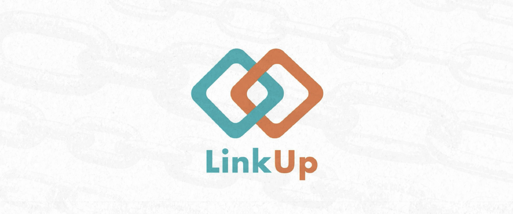

Animation
LinkUp
An animated short film about loneliness, connection and the role of community in the digital age.

Overview
LinkUp was developed as my bachelor thesis. The project addresses loneliness among young adults and explores how a fictional organization could raise awareness for the topic through an emotional animated film.


Approach
The aim was to create an animated short film that addresses loneliness among young people in a way that feels empathetic rather than confrontational. This is very important, because loneliness is a very sensitive topic in todays society and many young people won`t even admit to themselves that they are struggling with it. The film follows a young apprentice through a period of isolation and uses visual metaphors, striking imagery and an emotional turning point to show how support systems can open the way to new connections. The organization “LinkUp” presented in the project is a fictional concept. Link to the film: https://youtu.be/yBSHkJdWyf4
Overview Layout